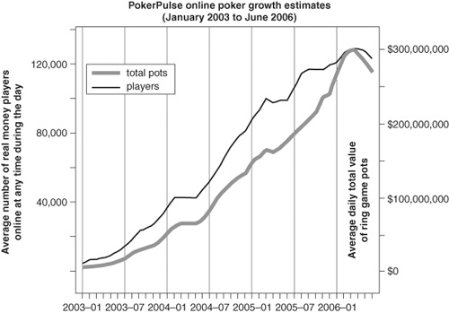

{% include JB/setup %}
{% raw %}
<div>
<a name="toppage" class="pcalibre calibre1"></a><table width="100%" border="0" cellspacing="0" cellpadding="0" class="sfbody"><tr valign="top" class="calibre2"><td class="calibre3"><a name="MainContent" class="pcalibre calibre1"></a><table width="95%" class="sfbody"><tr class="calibre2"><td class="pcalibre1 v"><!--Copyright (c) 2002 Safari Tech Books Online--><table width="100%" border="0" cellspacing="0" cellpadding="2" class="calibre4"><tr class="calibre2"><td valign="middle" class="v1 pcalibre1" height="5"></td></tr><tr class="calibre2"><td valign="middle" class="v1 pcalibre1"><table cellpadding="0" cellspacing="0" border="0" width="100%" class="calibre4"><tr class="calibre2"><td class="calibre6"><span class="calibre7"> </span>
                   
                  <span class="calibre7">   </span>
             <span class="calibre7"> </span></td></tr></table></td><td class="calibre8"/><td valign="middle" class="v2 pcalibre1"> 
           
          <span class="calibre7"><a target="_self" href="ch03.html" title="Previous section" class="pcalibre calibre1"></a></span>
				
				 
				
				<span class="calibre7"><a target="_self" href="ch03lev1sec2.html" title="Next section" class="pcalibre calibre1"></a></span></td></tr></table><div id="section" class="calibre15"><table width="100%" border="0" cellspacing="0" cellpadding="0" class="calibre4"><tr class="calibre2"><td valign="top" class="calibre8"><a href="10061538.html" class="pcalibre calibre1"></a>Security Game Programming Networking Programming Greg Hoglund Gary McGraw Addison Wesley Professional Exploiting Online Games: Cheating Massively Distributed Systems<a name="ch03lev1sec1" class="pcalibre calibre1"></a>
<h3 id="title-IDAXOZZD" class="docSection1Title">How Game Companies Make Money</h3>
<p class="docText">MMORPG game companies make money in two ways. The first is by selling copies of their games directly to gamers. The second way is to charge online players a subscription fee (usually on a monthly basis).</p>
<p class="docText">Let's think about these two revenue streams in terms of WoW for a minute. With more than 8 million players, if on average the WoW client software costs $20 retail, that's $160 million. This is how much money could have been lost every year in the old days when game software was <a name="iddle1543" class="pcalibre calibre1"></a><a name="iddle1565" class="pcalibre calibre1"></a><a name="iddle1568" class="pcalibre calibre1"></a><a name="iddle1593" class="pcalibre calibre1"></a><a name="iddle1648" class="pcalibre calibre1"></a><a name="iddle1870" class="pcalibre calibre1"></a><a name="iddle1872" class="pcalibre calibre1"></a><a name="iddle1945" class="pcalibre calibre1"></a><a name="iddle1947" class="pcalibre calibre1"></a><a name="iddle1949" class="pcalibre calibre1"></a>completely compromised (or cracked) and distributed for free. Problems with the "game on a disk" model provided one technical reason that the client-server model caught on. Recall from <a class="pcalibre6 pcalibre5 calibre1" href="ch02.html#ch02">Chapter 2</a> that by storing a majority of state on the server, the modern client-server model puts a serious crimp in the idea of cracking games directly.</p>
<p class="docText">So far, we've come up with $160 million or so. But it gets much more interesting once we factor in the subscription model revenue stream. In the case of WoW, that stream is $14 per month per player, which sums to $112 million per month. Multiply this princely sum by 12, and we have a whopping $1.344 billion per year! Much more serious money, and this estimate considers only one MMORPG!<sup class="docFootnote"><a class="pcalibre6 pcalibre5 calibre1" href="#ch03fn01">[1]</a></sup></p><blockquote class="calibre24"><p class="docFootnote1"><sup class="calibre31"><a name="ch03fn01" class="pcalibre calibre1">[1]</a></sup> Recall from <a class="pcalibre6 pcalibre5 calibre1" href="ch01.html#ch01">Chapter 1</a> that WoW has just over 50% market share for MMORPGs.</p></blockquote>
<p class="docText">Microsoft estimates that the total value of the gaming market on the company's platforms was approximately $6 billion worldwide in 2005, evenly split between retail sales and online game subscriptions. The analyst firm DFC reports that by 2010, the wider gaming market will double to $12 billion (a 14% compound annual growth rate).</p>
<p class="docText">The game companies are raking it in. Clearly, they want to protect this source of income. Not only that, but they also want to make sure that a majority of their players remain satisfied with their gaming experience so they will continue to subscribe.</p>
<p class="docText">Cheating is a direct threat to this large business. It's no wonder the game companies work hard to thwart it.</p>
<a name="ch03lev2sec1" class="pcalibre calibre1"></a>
<h4 id="title-IDA0SZZD" class="docSection2Title">Poker</h4>
<p class="docText">Online poker is similarly huge. <a class="pcalibre6 pcalibre5 calibre1" href="#ch03fig01">Figure 3-1</a> shows the estimated growth in online poker (both in terms of players and in terms of money) over a multiyear period. Online poker companies have taken advantage of this growth to go public, with staggering results.</p>
<a name="ch03fig01" class="pcalibre calibre1"></a><p class="calibre28"><center class="calibre29">
<h5 class="docFigureTitle">Figure 3-1. Poker stats through June 2006. (From &lt;<a class="pcalibre6 pcalibre5 calibre1" target="_blank" href="http://www.pokerpulse.com">http://www.pokerpulse.com</a>&gt;; reproduced with permission.)</h5>
</center></p><p class="docText"><div class="v8 pcalibre3 pcalibre2"><a target="_blank" href="fig03-01_alt.jpg" class="pcalibre calibre20">[View full size image]</a></div></p>
<br class="calibre15"/>
<p class="docText"><a name="iddle1251" class="pcalibre calibre1"></a><a name="iddle1370" class="pcalibre calibre1"></a><a name="iddle1708" class="pcalibre calibre1"></a><a name="iddle1860" class="pcalibre calibre1"></a><a name="iddle2067" class="pcalibre calibre1"></a>One real damper on all of this growth will be the kibosh put on online poker by the U.S. Congress in fall 2006. After 2006, U.S. citizens will by law have a very hard time gambling online with real money. There is the rest of the world, however. You can see the impact of the U.S. law in the stats of <a class="pcalibre6 pcalibre5 calibre1" href="#ch03fig01">Figure 3-1</a>.</p>
<p class="docText">For 2005, revenues from online poker were estimated at $200 million per month.<sup class="docFootnote"><a class="pcalibre6 pcalibre5 calibre1" href="#ch03fn02">[2]</a></sup>.</p><blockquote class="calibre24"><p class="docFootnote1"><sup class="calibre31"><a name="ch03fn02" class="pcalibre calibre1">[2]</a></sup> For an analysis of poker revenues, see &lt;<a class="pcalibre6 pcalibre5 calibre1" target="_blank" href="http://www.digitaljournal.com/news/?articleID=4388">http://www.digitaljournal.com/news/?articleID=4388</a>&gt;</p></blockquote>
<p class="docText">With this kind of money at stake, it's not surprising that players are looking for any advantage over their adversaries. Because everything is automated with machines, tracking poker play online is easy. Using the handy "hand histories" feature available on most online poker sites, a player can track every action in a game, revealing a wealth of statistical information.</p>
<a href="10061538.html" class="pcalibre calibre1"></a><ul class="calibre18"></ul></td></tr></table><table width="100%" border="0" cellspacing="0" cellpadding="2" class="calibre4"><tr class="calibre2"><td valign="middle" class="v1 pcalibre1" height="5"></td></tr><tr class="calibre2"><td valign="middle" class="v1 pcalibre1"><table cellpadding="0" cellspacing="0" border="0" width="100%" class="calibre4"><tr class="calibre2"><td class="calibre6"><span class="calibre7"> </span>
                   
                  <span class="calibre7">   </span>
             <span class="calibre7"> </span></td></tr></table></td><td class="calibre8"/><td valign="middle" class="v2 pcalibre1"> 
           
          <span class="calibre7"><a target="_self" href="ch03.html" title="Previous section" class="pcalibre calibre1"></a></span>
				
				 
				
				<span class="calibre7"><a target="_self" href="ch03lev1sec2.html" title="Next section" class="pcalibre calibre1"></a></span></td></tr></table><table width="100%" border="0" cellspacing="0" cellpadding="2" class="calibre4"><tr class="calibre2"><td valign="top" class="calibre14"><span class="calibre7"></span></td></tr></table></div><!--IP User 2--></td></tr></table></td><td class="calibre3">
                         
                      </td></tr><tr class="calibre2"><td colspan="3" valign="bottom" class="calibre3"><br class="calibre15"/><p class="v5 pcalibre1"></p><br class="calibre15"/></td></tr></table></div>

{% endraw %}

